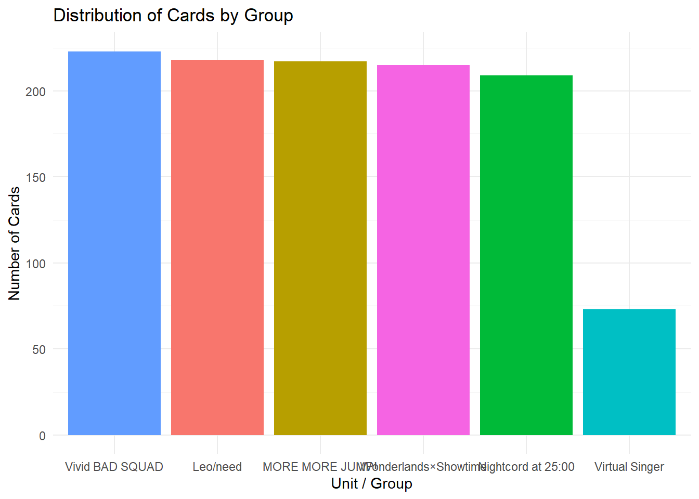
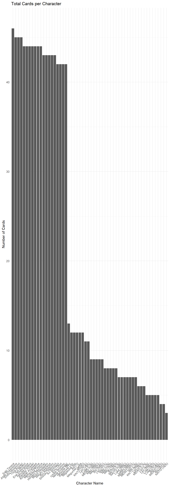

For this project, I got some data from the Wiki from one of my favorite mobile games. I tried webscraping but that simply did not work.
For this piece, I would love to calculate how many cards exist for each character, the most frequent rarity and availability (limited or not) for each character, and also generate a graph of popularity for each character. The variables are below:
To begin, I loaded in the data and the packages. Then, I changed the symbols for the rarity variable into numbers. Then I made a new variable that accounts for whether the card had a costume and was associated with an event or not. This will make charting my graphs much easier. While graphing I ran into an issue with the ‘group’ variable and changed it to unit to make R less angry.
library(tidyverse)## Warning: package 'ggplot2' was built under R version 4.5.3## ── Attaching core tidyverse packages ──────────────────────── tidyverse 2.0.0 ──
## ✔ dplyr 1.1.4 ✔ readr 2.1.6
## ✔ forcats 1.0.1 ✔ stringr 1.6.0
## ✔ ggplot2 4.0.3 ✔ tibble 3.3.1
## ✔ lubridate 1.9.4 ✔ tidyr 1.3.2
## ✔ purrr 1.2.1
## ── Conflicts ────────────────────────────────────────── tidyverse_conflicts() ──
## ✖ dplyr::filter() masks stats::filter()
## ✖ dplyr::lag() masks stats::lag()
## ℹ Use the conflicted package (<http://conflicted.r-lib.org/>) to force all conflicts to become errorslibrary(readxl)
pjsk_csv <- read_excel("pjsk.csv.xlsx")
library(tidyverse)
df_cleaned <- pjsk_csv %>%
mutate(
rarity_numeric = case_when(
str_detect(Rarity, "🎀") ~ 4,
TRUE ~ as.numeric(str_count(Rarity, "⭐"))
),
has_costume = case_when(
is.na(Costume) | Costume == "" | Costume == "None" | Costume == "-" ~ "Not Present",
TRUE ~ "Present"
),
is_event_card = case_when(
is.na(Event) | Event == "" | Event == "None" | Event == "-" ~ "No",
TRUE ~ "Yes"
)
)
library(tidyverse)
colnames(df_cleaned) <- tolower(trimws(colnames(df_cleaned)))
print(colnames(df_cleaned))## [1] "name" "group" "character" "type"
## [5] "rarity" "availability" "skill type" "date"
## [9] "event" "costume" "rarity_numeric" "has_costume"
## [13] "is_event_card"df_cleaned <- df_cleaned %>%
rename(unit = "group")Next, I wanted to see how many cards existed for each group. As such, I generated a bar graph and factored that by groups. I do the same thing for characters, as well.
ggplot(df_cleaned, aes(x = fct_infreq(unit), fill = unit)) +
geom_bar() +
labs(
title = "Distribution of Cards by Group",
x = "Unit / Group",
y = "Number of Cards"
) +
theme_minimal() +
theme(legend.position = "none")
ggplot(df_cleaned, aes(x = fct_infreq(character))) +
geom_bar() +
labs(
title = "Total Cards per Character",
x = "Character Name",
y = "Number of Cards"
) +
theme_minimal() +
theme(
axis.text.x = element_text(angle = 45, vjust = 1, hjust = 1),
legend.position = "bottom"
)